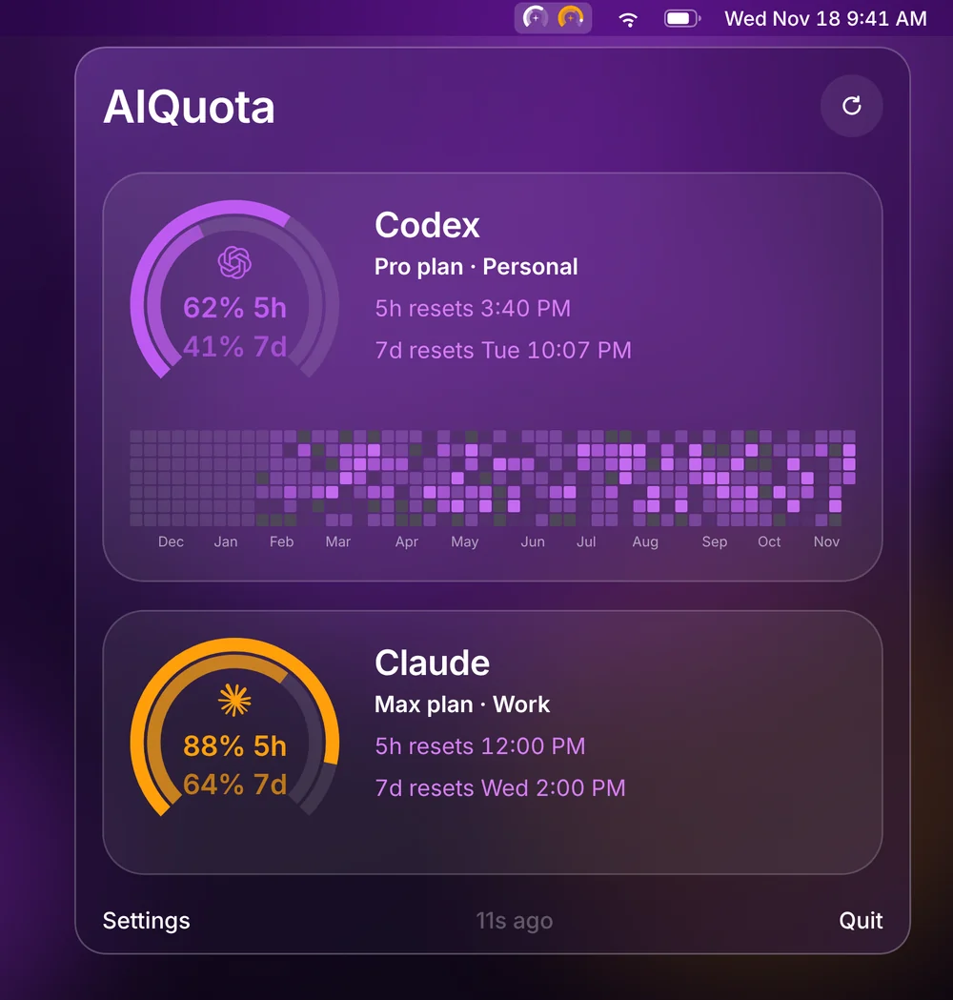

2026년 9월 15일
버전 1.9.28
추가 사용량과 초기화 날짜 표시가 더 명확해졌습니다.
- Fable 5를 포함해 구독 외로 사용한 크레딧과 남은 크레딧 잔액을 구분해 표시합니다.
- 일주일 이상 남은 초기화에는 날짜가 표시됩니다.
- 사용 한도나 초기화 시간을 확인할 수 없을 때 더 명확한 메시지를 보여 줍니다.
AIQuota가 iPhone과 iPad에 찾아옵니다.
또는 Mac용 2.0을 직접 다운로드하세요.

2026년 9월 15일
추가 사용량과 초기화 날짜 표시가 더 명확해졌습니다.
2026년 9월 4일
더 안정적인 Claude 웹 로그인.
2026년 8월 28일
만료된 Claude 세션을 더 쉽게 복구합니다.